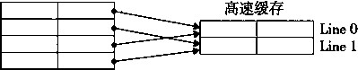
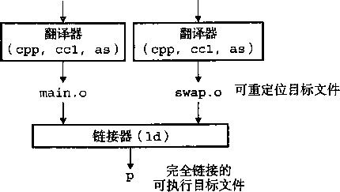

练习题6.3 对这个问题的解答是对磁盘访问时间公式的直接应用。平均旋转时间 （以ms 为单位 ） 为
A avg rotation ^ x max rotation
=1/2 x (60 secs/15 000 RPM) x 1000 ms/sec «2 ms
平均传送时间为
^avgtfansfcr = (60secs/15 000 RPM) x 1/500 扇区 / 磁道 X1000 ms/sec »0. 008 ms
总的来说，总的预计访问时间为
^Taccess — ^avg seek + ^avg rotation + ^avg transfer
=8 ms +2 ms +0. 008 ms
练习题 6.4这道题很好地检查了你对影响磁盘性能的因素的理解。首先我们需要确定这个文件和磁盘 的一些基本属性。这个文件由2000个512字节的逻辑块组成。对于磁盘，7； vgseek =5m S , 7—^=6 ms,而
^avg rotation- 3 0
最好情况：在好的情况下，块被映射到连续的扇区，在同一柱面上，那样就可以一块接一块的读， 不用移动读/写头。一旦读/写头定位到了第一个 扇区， 需要磁盘转两整圈（每圈1000个扇区）来读所有 2000个块。所以，读这个文件的总时间为7^^+7^-^2^7^--=5+3+12=2011^
随机的情况：在这种情况下，块被随机的映射到扇区上，读2000块中的每一块都需要r avgseek +7； vgrotation ms, 所以读这个文件的总时间为（r avg8eek +r avgrotaUOT ) *2000 = 16 000ms (16秒）。你现在可以看到为什么清理磁
盘碎片是个好主意！
练习题6.5这个问题，基于图6-14中的区图，能很好地测试你对磁盘构造的理解，它还能使你推断出一 个真实磁盘驱动器的有趣特性。
区0。一共有864X8X3201=22 125 312个扇区，22 076 928个逻辑块被分配到区0, —共有22 125 31222 076 928=48 384个备用扇区。假设每个柱面有864X8=6912个扇区，那么区0中有48 384/6912=7个备
用柱面。
区8。类似的分析说明区8中有（(3700X5632)—20 804 608)/5632=6个备用柱面。
练习题6.6这是一个简单的练习，让你对SSD的可行性有一些有趣的了解。回想一下对于磁盘， 1PB=10 9 MB。那么下面对单位的直接翻译得到了下面的每种情况的预测时间：
最糟糕情况顺序写（170MB/S): 10 9 X (1/170) X (1/(86 400X365))«0.2 年。 a 最糟糕情况随机写（14MB/S): 10 9 X (1/14) X (1/(86 400X365)) = 2.25 年。
平均情况（20GB/天） ： 10 9 X (1/20 000) X (1/365)= 140 年。
练习题6_7在2000年到2010年的10年间，旋转磁盘的单位价格下降了大约30倍，这意味着价格大约每 2年下降2倍。假设这个趋势一直持续，1PB的存储设备，在2010年花费300 000美元，在十次这种2倍 的下降之后会降到500美元。因为这种下降每2年发生一次，我们可以预期在大约2030年，可以用500美 元买到1PB的存储设备。
练习题6.8为了创建一个步长为1的引用模式，必须改变循环的次序 ， 使得最右边的索引变化得最快：
int sumarray3d(int a[N][N][N])
int 1, j, k, sum = 0;
for (k = 0; k < N; k++) {
for (i = 0; i < N; i++) {
for (j = 0; j < N; j++) { s皿 += a[k] [i] [j];
}
>
>
return sum;
2
3
4
5
1
8
9
10
11
12
13
这是一个很重要的思想。要保证你理解了为什么这种循环次序改变就能得到一个步长为1的访问模式。 练习题6.9解决这个问题的关键在于想象出数组是如何在存储器中排列的 ， 然后分析引用模式。函 数clearl以步长为1的引用模式访问数组 ， 因此明显地具有最好的空间局部性。函数cle ar 2依次扫 描#个结构中的每一个，这是好的，但是在每个结构中，它以步长不为1的模式跳到下列相对于结构起始 位置的偏移处：0、12、4、16、8、20。所以clear2的空间局部性比clearl的要差。函数clear3不 仅在每个结构中跳来跳去，而且还从结构跳到结构，所以clear3的空间局部性比clear2和clearl都 要差。
练习题6.10这个解答是对图6-28中各种高速缓存参数定义的直接应用。不那么令人兴奋，但是在真正理 解高速缓存是如何工作的之前，你需要理解高速缓存的结构是如何导致这样划分地址位的。
高速缓存 |
m |
C |
B |
E |
S |
t |
s |
b |
1. |
32 |
1024 |
4 |
1 |
256 |
22 |
8 |
2 |
2. |
32 |
1024 |
8 |
4 |
32 |
24 |
5 |
3 |
3. |
32 |
1024 |
32 |
32 |
1 |
27 |
0 |
5 |
练习题6.11填充消除了冲突不命中。因此，四分之三的引用是命中的。
练习题6.12有时候，理解为什么某种思想是不好的，能够帮助你理解为什么另一种是好的。这里，我们 看到的坏的想法是用高位来索引高速缓存，而不是用中间的位。
A•用高位做索引，每个连续的数组片（chunk)是由2'个块组成的，这里/是标记位数。因此，数组 头之个连续的块都会映射到组0,接下来的之个块会映射到组1,依此类推。，
对于直接映射高速缓存 E，B, m) = (512, 1, 32, 32),高速缓存容量是512个32字节的块, 每个高速缓存行中有/=18个标记位。因此，数组中头2 18 个块会映射到组0,接下来2 18 个块会映射到组1。 因为我们的数组只由（4096*4)/32-512个块组成，所以数组中所有的块都被映射到组0。因此，在任何时 刻，高速缓存至多只能保存一个数组块，即使数组足够小，能够完全放到高速缓存中。很明显，用高位做 索引不能充分利用高速缓存。
练习题6.13两个低位是块偏移（CO),然后是三位的组索引（CI),剩下的位作为标记（CT):
|
12 |
11 |
10 |
9 |
8 |
7 |
6 |
5 |
4 |
3 |
2 |
1 |
0 |
|
CT |
CT |
CT |
CT |
CT |
CT |
CT |
CT |
CI |
CI |
CI |
CO |
CO |
|
练习题 6.14地址：0x0E34 A •地址格式（每个小格子表示一个位）： 12 11 10 9 8 |
7 |
6 |
5 4 3 2 1 0 |
|||
|
0 |
1 |
1 |
1 0 |
0 |
0 |
110 10 0 十 |
|
CT |
CT |
CT |
CT CT |
CT |
CT |
CT CI CI CI CO CO |
B.存储器引用：
参数 |
值 |
髙速缓存块偏移（CO) |
0x0 |
髙速缓存组索引（CI) |
0x5 |
髙速缓存标记（CT) |
0x71 |
髙速缓存命中吗？（是/否） |
是 ' |
髙速缓存返回的字节 |
OxB |
练习题6.15地址：0x0DD5
存储器引用：
地址格式（每个小格子表示一个位）：
12 11 10 987654321 0
0 | 1 | 1 | 0 丨 1 | 1 丨 1 丨 0 丨 1 丨 0 丨 1 丨 0|1 CT CT CT CT CT CT CT CT CI CI CI CO CO
参数 |
值 |
高速缓存块偏移（CO) |
0x1 |
髙速缓存组索引（CI) |
0x5 |
高速缓存标记（CT) |
0x6E |
髙速缓存命中吗？（是/否） |
否 |
返回的高速缓存字节 |
— |
练习题6.16地址：0xlFF4
A.地址格式（每个小格子表示一个位）：
11 10 9 8 7 6 5 4 3 2 1 0
1|1|1|1|1|1|1|1|0|0|1|0|0 CT CT CT CT CT CT CT CT CI CI CI CO CO
B.存储器引用
值
参 数
高速缓存块偏移（C0)
高速缓存组索引（CI)
髙速缓存标记(CT)
0x0
0x1
OxFF
否
高速缓存命中吗？（是/否）
返回的髙速缓存字节
练习题 6.17这个问题是练习题6.13〜6.16的一种逆过程，要求你反向工作，从高速缓存的内容推出会在 某个组中命中的地址。在这种情况下，组3包含一个有效行，标记为0x32。因为组中只有一个有效行，四 个地址会命中。这些地址的二进制形式为0 0110 0100 llxxo因此，在组3中命中的四个十六进制地 址是 ：0x064C、0x064D、0x064E 和 0x064F。
因此，所有的不命中都是开始时的冷不命中。 src 数组
练习题 6.18 A.解决这个问题的关键是想象出图6-50中的图像。注意，每个高速缓存行只包含数组的一 个行，高速缓存正好只够保存一个数组，而且对于所有的/, src和dst的行/映射到同一个高速缓存行。 因为高速缓存不够大，不足以容纳这两个数组，所以对一个数组的引用总是驱逐出另一个数组的有用的 行。例如，对dst[0][0]写会驱逐当我们读sr C [0] [0]时加载进来的那一行。所以，当我们接下来读 src[0] [1]时，我们会有一个不命中。
主存，
16
dst ‘

图 6-50 练习题 6.18 的图
B.当高速缓存为32字节时，它足够大，能容纳这两个数组。
dst数组
|
列0 |
列1 |
列0 |
列1 |
||
|
行0 |
m |
m |
行0 |
m |
m |
|
行1 |
m |
m |
行1 |
m |
h |
|
dst数组 |
src \ |
改组 |
|||
|
列0 |
列1 |
列0 |
列1 |
||
|
行0 |
m |
h |
行0 |
m |
h |
|
行1 |
m |
h |
行1 |
m |
h |
练习题 6.19每个16字节的高速缓存行包含着两个连续的algae_position结构。每个循环按照存储器 顺序访问这些结构，每次读一个整数元素。所以，每个循环的模式就是不命中、命中、不命中、命中，依 此类推。注意，对于这个问题，我们不必实际列举出读和不命中的总数，就能预测出不命中率。
A•读总数是多少？ 512个读。
缓存不命中的读总数是多少？ 256个不命中。
不命中率是多少？ 256/512=50%。
练习题 6.20对这个问题的关键是注意到这个高速缓存只能保存数组的1/2。所以，按照列顺序来扫描数 组的第二部分会驱逐扫描第一部分时加载进来的那些行。例如，读grid[16] [0]的第一个元素会驱逐当 我们读grid[0] [0]的元素时加载进来的那一行。这一行也包含grid[0] [1]。所以，当我们开始扫描 下一列时，对grid[0] [1]第一个元素的引用会不命中。
读总数是多少？ 512个读。
缓存不命中的读总数是多少？ 256个不命中。
C•不命中率是多少？ 256/512=50%。
D.如果高速缓存有两倍大，那么不命中率会是多少呢？如果高速缓存有现在的两倍大，那么它能够保 存整个grid数组。所有的不命中都会是开始时的冷不命中，而不命中率会是1/4=25%。
练习题6.21这个循环有很好的步长为1的引用模式，因此所有的不命中都是最开始时的冷不命中。
读总数是多少？ 512个读。
缓存不命中的读总数是多少？ 128个不命中.
不命中率是多少？ 128/512=25%。
如果高速缓存有两倍大，那么不命中率会是多少呢？无论高速缓存的大小增加多少，都不会改变不 命中率，因为冷不命中是不可避免的。 4
练习题6.22从L1的吞吐量蜂值是大约6500‘/s，时钟频率是2670 MHz,而每次读访问都是以8字 节double类型为单位的。所以，从这张图中我们可以估计出在这台机器上从L1访问一个字需要大约 2670/6500 X 8=3.2 » 4 周期。
I 第二部分 I
Computer Systems ： A Programmer , s Perspective, 2E |
在系统上运行程序
继续我们对计算机系统的探索，进一步来看看构建和运行应用程序的 系统软件。链接器把程序的各个部分合并成一个文件，处理器可以将这个 文件加载到存储器，并且执行它。现代操作系统与硬件合作，为每个程序 提供一种幻象，好像这个程序是在独占地使用处理器和主存，而实际上, 在任何时刻，系统上都有多个程序在运行。
在本书的第一部分，你很好地理解了程序和硬件之间的交互关系。本 书的第二部分将拓宽你对系统的•了解，使你牢固地掌握程序和操作系统之 间的交互关系。你将学习到如何使用操作系统提供的服务来构建系统级程 序，例如Unix外壳和动态存储器分配包。
第7章|
Computer Systems ： A Programmer * s Perspective, 2E
链 接
链接（linking)是将各种代码和数据部分收集起来并组合成为一个单一文件的过程，这 个 文件可 被加载 （或被拷贝）到存储器并执行。链接可以执行于 编译时 （compile time),也就 是在源代码被翻译成机器代码时；也可以执行于 加载时 （load time),也就是在程序被 加载器 (loader)加载到存储器并执 行时； 甚至执行于 运行时 （runtime),由应用程序来执行。在早期 的计算机系统中，链接是手动执行的。在现代系统中，链接是由叫做链接器（linker)的程序自 动执行的。
链接器在软件开发中扮演着一个关键的角色，因为它们使得分 离编译 （separate compilation) 成为可能。我们不用将一个大型的应用程序组织为一个巨大的源文件，而是可以把它分解为更 小、更好管理的模块，可以独立地修改和编译这些模块。当我们改变这些模块中的一个时，只需 简单地重新编译它，并重新链接应用，而不必重新编译其他文件。
链接通常是由链接器来默默地处理的，对于那些在编程入门课堂上构造小程序的学生而言， 链接不是一个童要的议题。那为什么还要这么麻烦地学习关于链接的知识呢？
• 理解链接器将帮助你构造大型程序。 构造大型程序的程序员经常会遇到由于缺少模块、缺 少库或者不兼容的库版本引起的链接器错误。除非你理解链接器是如何解析引用、什么是 库以及链接器是如何使用库来解析引用的，否则这类错误将令你感到迷惑和挫败。
理解链接器将帮助你避免一些危险的编程错误。 Unix链接器解析符号引用时所做的决定可 以不动声色地影响你程序的正确性。在默认情况下,错误地定义多个全局变量的程序将通 过链接器，而不产生任何警告信息。由此得到的程序会产生令人迷惑的运行时行为，而且 非常难以调试。我们将向你展示这是如何发生的，以及该如何避免它。
• 理解链接将帮助你理解语言的作用域规则是如何实现的。 例如，全局和局部变量之间的区 别是什么？当你定义一个具有static属性的变量或者函数时，到底实际意味着什么？
• 理解链接将帮助你理解其他重要的系统概念。 链接器产生的可执行目标文件在重要的系统 功能中扮演着关键角色，比如加载和运行程序、虚拟存储器、分页和存储器映射。
• 理解链接将使你能够利用共享库。 多年以来，链接都被认为是相当简单和无趣的。然而， 随着共享库和动态链接在现代操作系统中童要性的日益加强，链接成为一个复杂的过程， 它为知识丰富的程序员提供了强大的能力。比如，许多软件产品在运行时使用共享库来升 级压缩包装的（shrink-wrapped) 二进制程序。还有，大多数Web服务器都依赖于共享库 的动态链接来提供动态内容。
这一章提供了关于链接各个方面的彻底的讨论，从传统静态链接到加载时的共享库的动态链 接，以及到运行时的共享库的动态链接。我们将使用实际示例来描述基本的机制，而且我们将识 别出链接问题在哪些情况下会影响程序的性能和正确性。
为了使描述具体和可理解，我们的讨论是基于这样的环境：一个运行Linux的x86系统，使 用标准的ELF目标文件格式。为了清楚一些，我们的讨论会集中在链接32位代码上，这个比链 接64位代码容易理解一些。 e 然而，无论是什么样的操作系统、ISA或者目标文件格式，基本 的链接概念是通用的，认识到这一点是很重要的。细节可能不尽相同，但是概念是相同的。
㊀你可以在X86-64系统上用gcc -m32产生32位代码。
7.1 编译器驱动程序
考虑图7-1中的C语言程序。它包含两个源文件：main, c和swap, c。函数main()调用 swap交换外部全局数组buf中的两个元素。一般认为，这是一种奇怪的交换两个数字的方式, 但是它将作为贯穿本章的一个小的运行示例，来帮助我们说明关于链接是如何工作的一些重要知 识点。
code/link/swap. c
code/link/main. c
/* main.c */ void swapO;
int buf[2]
int mainO
3
4
5
6
7
9
10
•Cl, 2>;
swapO; return 0;
/ 本 swap.c */
extern int buf [];
int *bufp0 = &buf[0]; int *bufpl;
void swapO
int temp;
bufpi = &buf [1]; temp = *bufpO; ♦bufpO = *bufpi; ♦bufpl = temp;
■ code/link/main. c
code/link/swap. c
a) main.
b) swap.
图7-1示例程序1 :这个示例程序由两个源文件组成，main, c和swap.c。mairv函数初始化一个 两元素的整数数组，然后调用swap函数来交换这一对数
大多数编译系统提供编译驱动程序（compiler driver),它代表用户在需要时调用语言预处理 器、编译器、汇编器和链接器。比如，要用GNU编译系统构造示例程序，我们就要通过在外壳 中输入下列命令行来调用GCC驱动程序：
unix> gcc -02 -g 一 o p main .c swap.c
图7-2概括了驱动程序在将示例程序从ASCII码源文件翻译成可执行目标文件时的行为。 (如果你想看看这些步骤，用-v选项来运行GCC。）驱动程序首先运行C预处理器（cpp),它 将C源程序main • c翻译成一个ASCII码的中间文件main • i ：
cpp [other arguments] main.c /tmp/main.i
接下来，驱动程序运行C编译器（ccl),它将main, i翻译成一个ASCII汇编语言文件 main.s c
ccl /tmp/main.i main.c -02 [other arguments] -o /tmp/main.s
然后，驱动程序运行汇编器(as),它将main• s翻译成一个可重定位目标文件（relocatable object file) main.o ：
as [other arguments] -o /tmp/raain.o /tmp/main.s
驱动程序经过相同的过程生成swap.o。最后，它运行链接器程序Id,将main.o和 swap.o以及一些必要的系统目标文件组合起来，创建一个可执行目标文件（executable object
file) p ：
Id -o p [system object files and args] /tmp/main.o /tmp/swap.o
main.c swap.c 源文件

图7-2静态链接。链接器将可重定位目标文件组合 起来，形成一个可执行目标文件
要运行可执行文件P,我们在Unix外壳 的命令行上输入它的名字：
皿ix> ,/p
外壳调用操作系统中一个叫 做加载 器的函 数，它拷贝可执行文件P中的代码和数据到存 储器，然后将控制转移到这个程序的开头。
7.2 静态链接
像Unix Id程序这样 的静态链接器 （static linker)以一组可重定位目标文件和命令行参 数作为输入，生成一个完全链接的可以加载和 运行的可执行目标文件作为输出。输入的可重 定位目标文件由各种不同的代码和数据节（section)组成。指令在一个节中，初始化的全局变量 在另一个节中 ， 而未初始化的变量又在另外一个节中 。
为了构造可执行文件，链接器必须完成两个主要任务：
•符号解析 （symbol resolution)。目标文件定义和引用 符号。 符号解析的目的是将每个符号 引用刚好和一个符号定义联系起来。
•重定位 （relocation)。编译器和汇编器生成从地址0开始的代码和数据节。链接器通过把 每个符号定义与一个存储器位置联系起来,然后修改所有对这些符号的引用，使得它们指 向这个存储器位置，从而重 定位这 些节。
接下来的内容将更加详细地描述这些任务。在你阅读的时候，要记住关于链接器的一些基本 事实：目标文件纯粹是字节块的集合。这些块中，有些包含程序代码，有些则包含程序数据，而 其他的则包含指导链接器和加载器的数据结构。链接器将这些块连接起来，确定被连接块的运行 时位置，并且修改代码和数据块中的各种位置。链接器对目标机器了解甚少。产生目标文件的编 译器和汇编器已经完成了大部分工作。
7.3 目标文件
目标文件有三种形式：
• 可重定位目标文件。 包含二进制代码和数据，其形式可以在编译时与其他可重定位目标文 件合并起来，创建一个可执行目标文件。
• 可执行目标文件。 包含二进制代码和数据，其形式可以被直接拷贝到存储器并执行。
• 共享目标文件。 一种特殊类型的可重定位目标文件，可以在加载或者运行时被动态地加载 到存储器并链接。
编译器和汇编器生成可重定位目标文件（包括共享目标文件)。链接器生成可执行目标文件。 从技术上来说 ， 一个目标模块 （object module)就是一个字节序列，而 一个目标文件 （object file)就是一个存放在磁盘文件中的目标模块。不过，我们还是互换地使用这些术语。
各个系统之间，目标文件格式都不相同。从贝尔实验室诞生的第一个Unix系统使用的是 a.out格式（直到今天，可执行文件仍然被称为a.out文件)。System V Unix的早期版本使用的
是一般目标文件格式（Common Object File Format, COFF)。Windows NT 使用的是 COFF 的一 个变种，叫做可移植可执行(Portable Executable, PE)格式。现代Unix系统（如Linux,还有 System V Unix后来的版本，各种BSD Unix,以及Sun Solaris)使用的是Unix可执行和可链接 格式（Executable and Linkable Format, ELF)。尽管我们的讨论集中在ELF上，但是不管是哪种 格式，基本的概念是相似的。
7.4 可重定位目标文件
图7-3展示了一个典型的ELF可重定位目标文件的格式。ELF头（ELF header)以一个16 字节的序列开始，这个序列描述了生成该文件的系统的字的大小和字节顺序。ELF头剩下的部 分包含帮助链接器瑪法分析和解释目标文件的信息。其中包括ELF头的大小、目标文件的类型 (如可重定位、可执行或者是共享的)、机器类型（如IA32)、节头部表（section header table)的 文件偏移，以及节头部表中的条目大小和数量。不同节的位置和大小是由节头部表描述的，其中 目标文件中每个节都有一个固定大小的条目（entry)。
ELF头 .text .rodata .data • bss • symtab .rel. text .rel. data .debug .line .strtab 节头部表
夹在ELF头和节头部表之间的都是节。一个典型的 ELF可重定位目标文件包含下面几个节：
.text：已编译程序的机器代码。
.rodata ：只读数据，比如printf语句中的格式串 和开关语句的跳转表（参见练习题7.14)。
data:已初始化的全局C变量。局部C变量在运 行时保存在栈中，既不出现在.data节中，也不出现在 .bss节中。
描述目标 j 文件的节 \
图7-3典型的ELF可重定位目标文件
.bss：未初始化的全局C变量。在目标文件中这个节 不占据实际的空间，它仅仅是一个占位符。目标文件格式 区分初始化和未初始化变量是为了空间效率：在目标文件 中，未初始化变量不需要占据任何实际的磁盘空间。
.symtab : —个符号表，它存放在程序中定义和引用 的函数和全局变量的信息。一些程序员错误地认为必须通 过-g选项来编译程序才能得到符号表信息。实际上，每个可重定位目标文件在.symtab中都 有一张符号表。然而，和编译器中的符号表不同，.symtab符号表不包含局部变量的条目。
.rel.text ： 一个.text节中位置的列表，当链接器把这个目标文件和其他文件结合时, 需要修改这些位置。一般而言，任何调用外部函数或者引用全局变量的指令都需要修改。另一方 面，调用本地函数的指令则不需要修改。注意，可执行目标文件中并不需要重定位信息，因此通 常省略，除非用户显式地指示链接器包含这些信息。
.rel.data:被模块引用或定义的任何全局变量的重定位信息。一般而言，任何已初始化 的全局变量，如果它的初始值是一个全局变量地址或者外部定义函数的地址，都需要被修改。
.debug: —个调试符号表，其条目是程序中定义的局部变量和类型定义，程序中定义和引 用的全局变量，以及原始的C源文件。只有以 一 g 选项调用编译驱动程序时才会得到这张表。
.line:原始C源程序中的行号和.text节中机器指令之间的映射。只有以-g选项调用 编译驱动程序时才会得到这张表。
.strtab ： 一个字符串表，其内容包括.symtab和• debug节中的符号表，以及节头部中 的+名字。字符串表就是以mill结尾的字符串序列。
为什么未初始化的数据称为.bss?
用术语 .bss 来表示未初始化的数据是很普遍的。它起始于 IBM 704 汇编语言 （ 大约在 1957 年） 中 “ 块存储开始 ” （Block Storage Start) 指令的首字’母缩写 ， 并沿用至今。一个记住区 别 .data 和 .bss 节的简单方法是把 “bss” 看成是 “ 更好地节省空间 ” （Better Save Space) ! 的缩写。
•‘
7.5 符号和符号表
每个可重定位目标模块m都有一个符号表，它包含m所定义和引用的符号的信息。在链接 器的上下文中 ， 有三种不同的符号：
•由 m 定义并能被其他模块引用 的全局 符号。全局链接器符号对应于非 静态的 C函数以及被 定义 为不带 C static属性的全局变暈。
•由其他模块定义并被模块m引用的全 局符号 。这些符号称为外 部符号 （external),对应于 定义在其他模块中的C函数和变量。
•只被模块所定义和引用的本地符号。有的本地链接器符号对应于带static属性的C函 数和全局变量。这些符号在模块所中随处可见，但是不能被其他模块引用。目标文件中对 应于模块 m 的节和相应的源文件的名字也能获得本地符号。
认识到本地链接器符号和本地程序变量的不同是很重要的。.symtab中的符号表不包含对 应于本地非静态程序变量的任何符号。这些符号在运行时在栈中被管理，链接器对此类符号不感 兴趣。
有趣的是，定义为带有C static属性的本地过程变量是不在栈中管理的。相反，编译器 在.data和.bss中为每个定义分配空间，并在符号表中创建一个有唯一名字的本地链接器符 号。比如，假设在同一模块中的两个函数定义了一个静态本地变量x:
int f()
{
static int x = 0;
return x;
-5 >
6
int gO
static int
return x;
n >
在这种情况中，编译器在.data中为两个整数分配空间，并引出（export)两个唯一的本 地链接器符号给汇编器。比如，它可以用x.l表示函数f中的定义，而用x.2表示函数g中的 定义。
给C语言初学者：利用static属性隐藏变量和函数名字
C 程序员使用static属性在模块内部隐藏变量和函数声明，就像你在 Java 和 C++ 中使用 public和private声明一样。C源代码文件扮演模块的角色。任何声明带有static属性的全局变 量或者函数都是模块私有的。类似地，任何声明为不带static属性的全局变量和兩数都是公 共的，可以被其他模块访问。尽可能用static属性来保护你的变量和函数是4艮好的编程习惯。
符号表是由汇编器构造的，使用编译器输出到汇编语言.s文件中的符号。.symtab节中
包含ELF符号表。这张符号表包含一个条目的数组。图7-4展示了每个条目的格式。
code/link/elfstructs. c
丨 typedef struct {
int name; /* String table offset */
int value ; /氺 Section offset, or VM address */
A int size; /* Object size in bytes */
char type :4, 卜 Data, func, section, or src file name (4 bits). */
binding :4; /* Local or global (4 bits) */
char reserved; /* Unused */
chax section; /* Section header index, ABS, UNDEF, */
/* Or COMMON */
} Elf.Symbol;
code/linkJelf structs. c
图7-4 ELF符号表条目。type和binding都是4位的
name是字符串表中的字节偏移，指向符号的以null结尾的字符串名字。value是符号的地 址。对于可重定位的模块来说，value是距定义目标的节的起始位置的偏移。对于可执行目标 文件来说，该值是一个绝对运行时地址。size是目标的大小（以字节为单位)。type通常要么 是数据，要么是函数。符号表还可以包含各个节的条目，以及对应原始源文件的路径名的条目。 所以这些目标的类型也有所不同。binding字段表示符号是本地的还是全局的。
每个符号都和目标文件的某个节相关联，由section字段表示，该字段也是一个到节头部 表的索引。有三个特殊的伪节（pseudo section),它们在节头部表中是没有条目的：ABS代表不 该被重定位的符号；UNDEF代表未定义的符号，也就是在本目标模块中引用，但是却在其他地 方定义的符号；COMMON表示还未被分配位置的未初始化的数据目标。对于COMMON符号, value字段给出对齐要求，而size给出最小的大小。
比如，下面是main.o的符号表中的最后三个条目，通过GNU READELF工具显示出来。 开始的8个条目没有显示出来，它们是链接器内部使用的本地符号。
|
Num: |
Value |
Size Type |
Bind |
Ot |
Ndx |
Name |
|
8: |
0 |
8 OBJECT |
GLOBAL |
0 |
3 |
buf |
|
9: |
0 |
17 FUNC |
GLOBAL |
0 |
1 |
main |
|
10: |
0 |
0 NOTYPE |
GLOBAL |
0 |
UND |
swap |
在这个例子中，我们看到一个关于全局符号buf定义的条目，它是一个位于.data节 中偏移为零（即value)处的8字节目标。其后跟随着的是全局符号main的定义，它是一 个位于• text节中偏移为零处的17字节函数。最后一个条目来自对外部符号swap的引用。 READELF用一个整数索引来标识每个节。Ndx=l表示.text节，而Ndx=3表示.data节。 相似地，下面是swap.o的符号表条目：
|
Num |
Value |
Size Type |
Bind |
Ot |
Ndx |
Name |
|
|
8 |
0 |
4 |
OBJECT |
GLOBAL |
0 |
3 bufpO |
|
|
9 |
0 |
0 |
N0TYPE |
GLOBAL |
0 |
UND |
buf |
|
10 |
0 |
39 |
FUNC |
GLOBAL |
0 |
1 |
swap |
|
11 |
4 |
4 |
OBJECT |
GLOBAL |
0 |
COM bufpl |
|
首先，我们看到一个关于全局符号bufpO定义的条目，它是从• data中偏移为0处开始 的一个4字节的已初始化目标。下一个符号来自bufpO的初始化代码中的对外部符号buf的引 用。后面紧随的是全局符号swap,它是一个位于.text中偏移为零处的39字节的函数。最后 一个条目是全局符号buf P l,它是一个未初始化的4字节数据目标（要求4字节对齐)，最终当 这个模块被链接时它将作为一个.bss目标分配。
® 练习题 7_1这个题目是关于图7-lb中的 swap.o 模块。对于每个在 swap.o 中定义或引用的符号, 请指出它是否在模块 swap.o 中的 .symtab 节中有一个符号表条目。如果是 ， 请指出定义该符号的 模块 （ swap.o 或者 main.o )、 符号类型（本地、全局或者外部）和它在模块中占据的节 （ .text 、 .data 或者 .bss )。
符号 |
swap.o .symtab 条目？ |
符号类型 |
在哪个模块中定义 |
节 |
buf |
||||
bufpO |
||||
bufpl |
||||
swap |
||||
temp |
7.6 符号解析
链接器解析符号引用的方法是将每个引用与它输入的可重定位目标文件的符号表中的一个确 定的符号定义联系起来。对那些和引用定义在相同模块中的本地符号的引用，符号解析是非常简 单明了的。编译器只允许每个模块中每个本地符号只有一个定义。编译器还确保静态本地变量， 它们也会有本地链接器符号，拥有唯一的名字。
不过，对全局符号的引用解析就棘手得多。当编译器遇到一个不是在当前模块中定义的符号 (变量或函数名）时，它会假设该符号是在其他某个模块中定义的，生成一个链接器符号表条目， 并把它交给链接器处理。如果链接器在它的任何输入模块中都找不到这个被引用的符号，它就输 出一条（通常很难阅读的）错误信息并终止。比如，如果我们试着在一台Linux机器上编译和链 接下面的源文件：
! void foo(void);
2
int mainO {
foo();
return 0;
>
那么编译器会没有障碍地运行，但是当链接器无法解析对foo的弓丨用时，它会终止：
unix> gcc -Wall -02 -o 1 inkerror linkerror.c
/tmp/ccSz5uti.o: In function f main':
/tmp/ccSz5uti.o(.text+0x7): undefined reference to f foo'
collect2: Id returned 1 exit status
对全局符号的符号解析很棘手，还因为多个目标文件可能会定义相同的符号。在这种情况中， 链接器必须要么标志一个错误，要么以某种方法选出一个定义并拋弃其他定义。Unix系统釆纳的 方法涉及编译器、汇编器和链接器之间的协作，这样也可能给不警觉的程序员带来一些麻烦。
对C++和Java中链接器符号的毁坏(mangling)
C++ 和 Java 都允许重载方法，这些方法在源代码中有相同的名字 ， 却有不同的参数列表。 那么链接器是如何区别这些不同的重载函数之间的差异呢？ C++ 和 Java 中能使用重载函数，是 因为编译器将每个唯一的方法和参数列表组合编码成一个对链接器来说唯一的名字。这种编码过 程叫做毁坏 (mangling), 而相反的过程叫做恢复（ demangling )。
幸运的是， C++ 和 Java 使用兼容的毁坏策略。一个被毁坏的类名字是由名字中字符的整数 数量，后面跟原始名字组成的。比如，类 Foo 被编码成 3Foo 。方法被编码为原始方法名，后
面加上 ， 加上被毁坏的类名，再加上每个参数的单个字母编码。比如， Foo: :bar (int,
long) 被编码为 bar__3Fooil 。毁坏全局变量和模板名字的策略是相似的。
链接器如何解析多重定义的全局符号
在编译时，编译器向汇编器输出每个全局符号 ， 或者是强（strong)或者是弱（weak),而 汇编器把这个信息隐含地编码在可重定位目标文件的符号表里。函数和已初始化的全局变量是强 符号，未初始化的全局变量是弱符号。对于图7-1中的示例程序 ， buf、bufpO、main和swap 是强符号；bufpl是弱符号。
根据强弱符号的定义 ， Unix链接器使用下面的规则来处理多重定义的符号 ：
•规则1 :不允许有多个强符号。
•规则2 ：如果有一个强符号和多个弱符号，那么选择强符号。
•规则3 ：如果有多个弱符号，那么从这些弱符号中任意选择一个。
比如，假设我们试图编译和链接下面两个C模块：
/* fool.c */ 1 /* barl.c */
int mainO 2 int mainO
{ 3 { •
return 0; 4 return 0;
> 5 >
在这种情况下，链接器将生成一条错误信息，因为强符号main被定义了多次（规则1):
unix> gcc fool .c barl . c /tmp/cca015022.o: In function (main 1 :
/tmp/cca015022.o(.text+OxO): multiple definition of ‘main 1 /tmp/ccaO15021.o(.text+OxO): first defined here
相似地 ， 链接器对于下面的模块也会生成一条错误信息，因为强符号x被定义了两次（规 则1):
卜 foo2 . c */ i h bar2.c */
int x = 15213; 2 int x = 15213;
int mainO 4 void f ()
<■ 5 {
return 0; 6 }
>
然而，如果在一个模块里X未被初始化，那么链接器将安静地选择定义在另一个模块中的 强符号（规则2):
h foo3.c */ •
#include <stdio.h>
void f(void);
/* bar3.c 木 / int x;
15212:
void f()
int x = 15213;
int mainO
f()；
printf("x = %d\n", x);
return 0;
}
在运行时，函数f将X的值由15213改为15212,这会给main函数的作者带来不受欢迎的 意外！注意，链接器通常不会表明它检测到多个x的定义 ：
unix> gcc 一 o foobar3 foo3.c bar3.c unix> ./foobar3 x = 15212